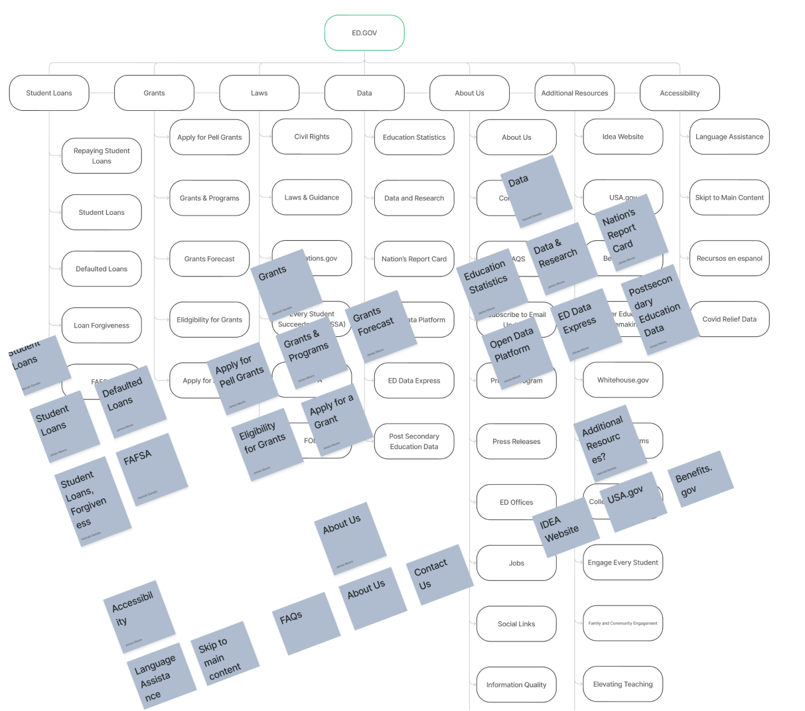
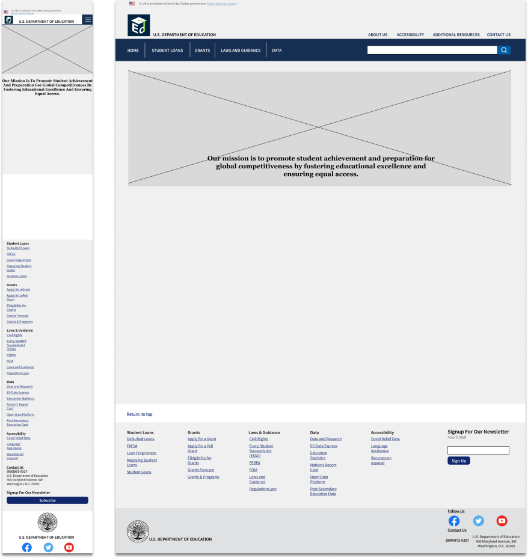

Department of Education Redesign
The Problem: The U.S Department of Education's site
was in major need of a makeover -
the site was dated and disorganized, leaving users confused and frustrated.
The Solution: create a new navigation bar that provided
a little
more information to the
user, make rerouting clear to the user, and give the site an overall facelift -
freshen it up at
bit!


